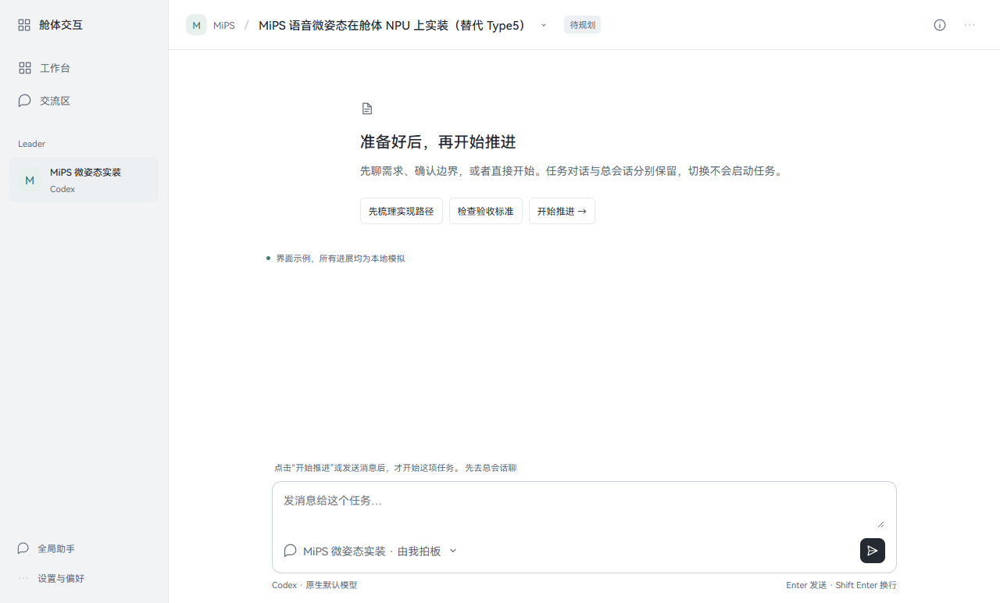
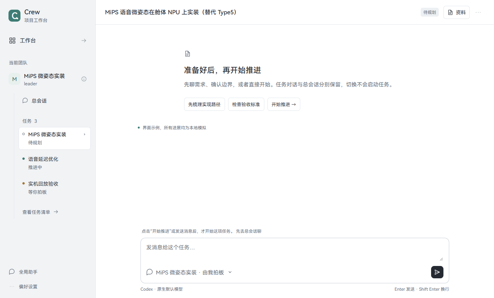
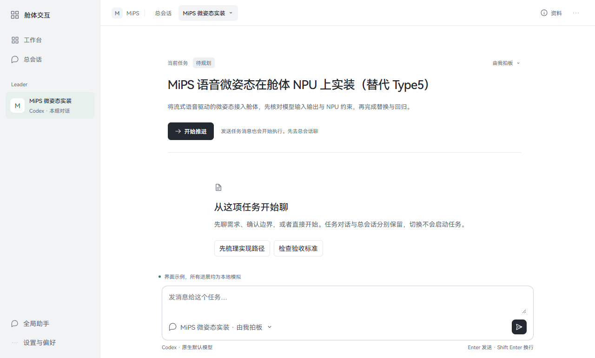
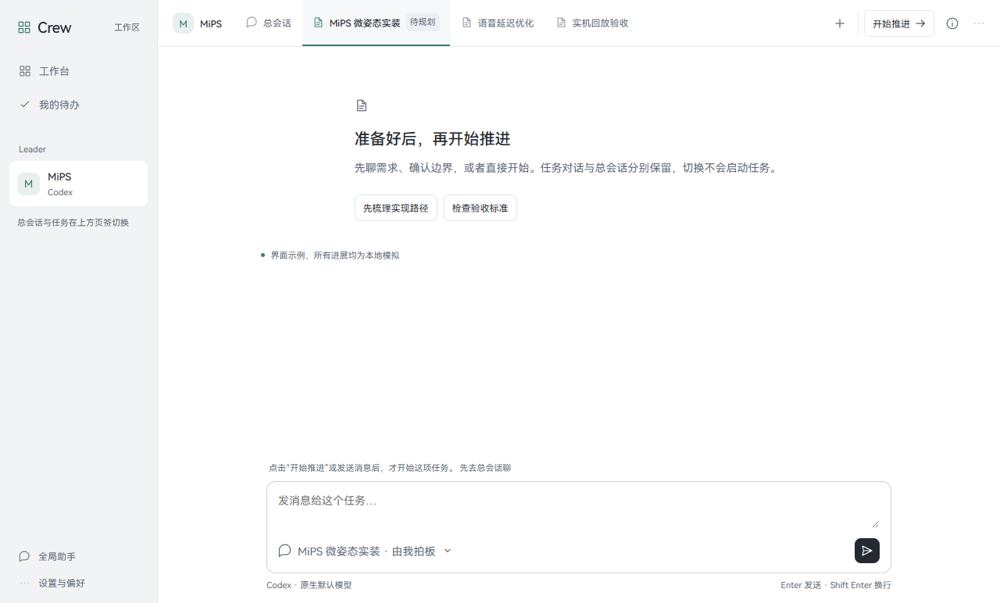

Crew · 交互原型
本地演示 · 示例数据
同一段对话，四种更干净的顶部
把“我在哪里、怎么换任务、现在要做什么”放清楚，同时拿掉重复的标题与说明。四个方案共用同一组任务、文字和字体，重点比较信息放在哪里、操作是否顺手。
无需安装或启动服务。发送消息和“开始推进”只在本地模拟，不连接正式 Crew、不调用 AI。



试用时可切换待规划、推进中、待拍板和待验收，也可开超长标题、深浅色。收起上方工具后，更容易比较实际页面；底部入口可恢复工具。
参考的是信息组织方法
VS Code · Breadcrumbs
把当前位置和相邻对象的切换放在一起。A 将这个思想用于 Crew 的会话与任务上下文。
Slack · 会话标题与详情
会话标题承载进入详情的入口，长描述不必始终展开。原型据此收起 leader 的完整职责。
Linear · 项目详情侧栏 与 Primer · 渐进披露
把属性与次要信息放在按需打开的区域，保留当前工作的主空间。
Primer · 导航 与 VS Code · 页签
B 借鉴稳定的侧栏导航；D 探索在已打开工作对象之间快速切换。
C 的“任务扉页”是针对 Crew 的设计推导：把一次性阅读的背景放回正文，并非复制上述产品的一张现成页面。四版也不复制它们的视觉皮肤。